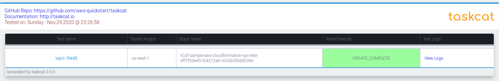
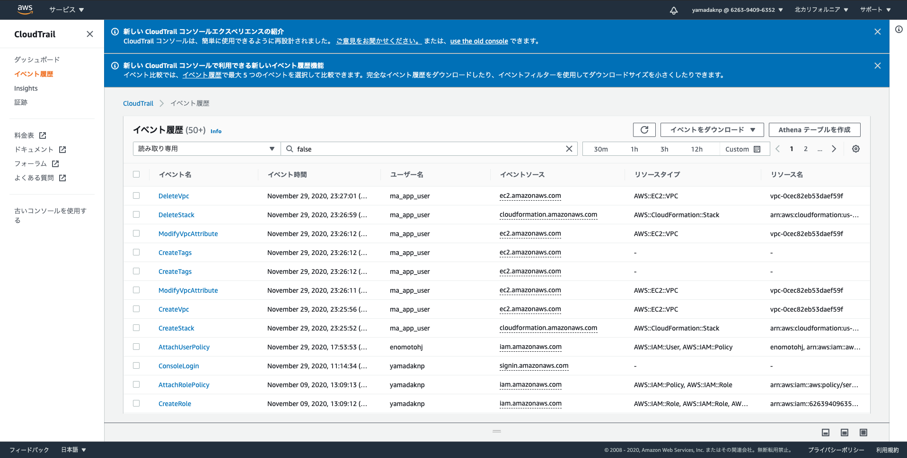

1. 20201130¶
1.1. Amazon RDSにアクセスするSpringアプリケーション¶
1.1.1. RDS構築¶
設定
項目
設定値
備考
VPC
ma-common-vpc
workspacesのlocal applicationから接続するため
Subnet Group
ma-yamada-database-1
2つ以上の別AZのPrivate Subnetを指定既存の共用サブネットを借用
セキュリティグループ
MA-yamada-rds-sg2
WorkSpacesのSGからのインバウンド(5432ポート)のみ許可
DBテーブル構築
psqlインストール
sudo yum update -y sudo yum install -y postgresql psql -U username -d sample_database -h xxxxxxx.ap-northeast-1.rds.amazonaws.com postgres=> \i sample_database.sql
テーブル構成
AWS認証設定
credential設定(Trello)
[default] aws_access_key_id=XXXXXXXXXXXXXXXX aws_secret_access_key=YYYYYYYYYYYYYYYYYYYYYYYYYYYYY
![participant App as a
participant SampleService as s
participant UsrRepository as uR
participant GroupRepository as gR
a -> s : setData()
== init() ==
s -> uR : deleteAll()
s -> gR : deleteAll()
== main ==
s -> gR : saveAll(Arrays.asList(new Group[]{group1, group2}));
note right
mynavi-group1
mynavi-group2
end note
s -> uR : saveAll(Arrays.asList(new User[]{user1, user2}));
note right
taro
MAIL: [test@test.com, test1@test.com]
ADDRESS: Tokyo Chiyodaku
MEMBERSHIP: [mynavi-group1, mynavi-group2]
hanako
MAIL: [test2@test.com, test3@test.com]
ADDRESS: Tokyo Chuoku
MEMBERSHIP: [mynavi-group2]
end note](../../_images/plantuml-c9e9d30e7577db0c8bb0648fa64d7142d2755cc5.png)
1.2. AWS CloudFormationを使用した基盤自動化¶
1.2.1. AWS CLIの実行環境／AWS認証情報の設定¶
aws-cli
pip3 install boto3 --upgrade --user # 先にこっちじゃないとエラーでた pip3 install awscli --upgrade --user # 確認 aws --version aws-cli/1.18.147 Python/2.7.18 Linux/4.14.203-156.332.amzn2.x86_64 botocore/1.18.6 aws s3 ls 2020-04-10 02:50:27 ma-mattermost-bucket # omit
1.2.2. 各種検証プラグインインストールと統合開発環境の設定¶
cfn-lint
command
pip3 install cfn-lint
IntelliJ IDEA Plugin
cfn-lint # インストールされてた
AWS CloudFormation # インストールされてた
1.2.3. CloudFormationテスト環境の構築¶
taskcatインストール
command
pip3 install taskcat --user taskcat --version _ _ _ | |_ __ _ ___| | _____ __ _| |_ | __/ _` / __| |/ / __/ _` | __| | || (_| \__ \ < (_| (_| | |_ \__\__,_|___/_|\_\___\__,_|\__| version 0.9.20 0.9.20
テスト
cfn-test.yml
AWSTemplateFormatVersion: '2010-09-09' Description: Sample CloudFormation template with YAML - VPC Parameters: VPCName: Description: Target VPC Stack Name Type: String MinLength: 1 MaxLength: 255 AllowedPattern: ^[a-zA-Z][-a-zA-Z0-9]*$ Default: mynavi-sample-cloudformation-vpc VPCCiderBlock: Description: CiderBlock paramater for VPC Type: String MinLength: 9 MaxLength: 18 AllowedPattern: (\d{1,3})\.(\d{1,3})\.(\d{1,3})\.(\d{1,3})/(\d{1,2}) Default: 172.0.0.0/16 Resources: VPC: Type: AWS::EC2::VPC Properties: CidrBlock: !Sub ${VPCCiderBlock} InstanceTenancy: default EnableDnsSupport: true EnableDnsHostnames: true Tags: - Key: Name Value: !Sub ${VPCName} Outputs: VPCID: Description: VPC ID Value: !Ref VPC Export: Name: !Sub ${AWS::StackName}-VPCID
.taskcat.yml
project: name: sample-aws-cloudformation regions: - us-west-1 tests: vpc-test: template: ./test-cfn.yaml
結果
 